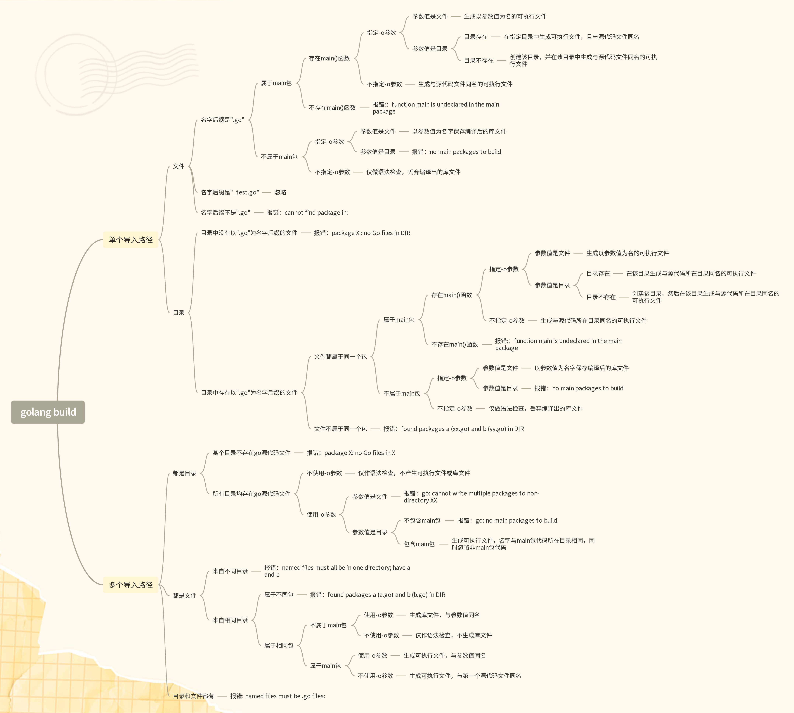

golang学习手册之build子命令（上）
前言
本系列文章不打算像其他介绍golang的文章一样，从“hello world”开始，先介绍golang源代码怎么写；相反，我要从工程角度先介绍golang程序是怎么运行起来的，再介绍具体语法，即golang源代码怎么写。
作为传承自C语言的静态语言，golang程序在运行之前也要先进行编译，生成可执行文件，才可以交给操作系统去运行。这不同于Python、Javascript等动态类型语言，它们是解释执行的。
golang使用go build命令编译源代码文件。
大纲
先来看一眼golang提供的关于go build命令的手册：
go help build
➜ ~ go help build
usage: go build [-o output] [build flags] [packages]
Build compiles the packages named by the import paths,
along with their dependencies, but it does not install the results.
If the arguments to build are a list of .go files from a single directory,
build treats them as a list of source files specifying a single package.
When compiling packages, build ignores files that end in '_test.go'.
When compiling a single main package, build writes
the resulting executable to an output file named after
the first source file ('go build ed.go rx.go' writes 'ed' or 'ed.exe')
or the source code directory ('go build unix/sam' writes 'sam' or 'sam.exe').
The '.exe' suffix is added when writing a Windows executable.
When compiling multiple packages or a single non-main package,
build compiles the packages but discards the resulting object,
serving only as a check that the packages can be built.
The -o flag forces build to write the resulting executable or object
to the named output file or directory, instead of the default behavior described
in the last two paragraphs. If the named output is an existing directory or
ends with a slash or backslash, then any resulting executables
will be written to that directory.
The build flags are shared by the build, clean, get, install, list, run,
and test commands:
-C dir
Change to dir before running the command.
Any files named on the command line are interpreted after
changing directories.
-a
force rebuilding of packages that are already up-to-date.
-n
print the commands but do not run them.
-p n
the number of programs, such as build commands or
test binaries, that can be run in parallel.
The default is GOMAXPROCS, normally the number of CPUs available.
-race
enable data race detection.
Supported only on linux/amd64, freebsd/amd64, darwin/amd64, darwin/arm64, windows/amd64,
linux/ppc64le and linux/arm64 (only for 48-bit VMA).
-msan
enable interoperation with memory sanitizer.
Supported only on linux/amd64, linux/arm64, freebsd/amd64
and only with Clang/LLVM as the host C compiler.
PIE build mode will be used on all platforms except linux/amd64.
-asan
enable interoperation with address sanitizer.
Supported only on linux/arm64, linux/amd64.
Supported only on linux/amd64 or linux/arm64 and only with GCC 7 and higher
or Clang/LLVM 9 and higher.
-cover
enable code coverage instrumentation (requires
that GOEXPERIMENT=coverageredesign be set).
-coverpkg pattern1,pattern2,pattern3
For a build that targets package 'main' (e.g. building a Go
executable), apply coverage analysis to each package matching
the patterns. The default is to apply coverage analysis to
packages in the main Go module. See 'go help packages' for a
description of package patterns. Sets -cover.
-v
print the names of packages as they are compiled.
-work
print the name of the temporary work directory and
do not delete it when exiting.
-x
print the commands.
-asmflags '[pattern=]arg list'
arguments to pass on each go tool asm invocation.
-buildmode mode
build mode to use. See 'go help buildmode' for more.
-buildvcs
Whether to stamp binaries with version control information
("true", "false", or "auto"). By default ("auto"), version control
information is stamped into a binary if the main package, the main module
containing it, and the current directory are all in the same repository.
Use -buildvcs=false to always omit version control information, or
-buildvcs=true to error out if version control information is available but
cannot be included due to a missing tool or ambiguous directory structure.
-compiler name
name of compiler to use, as in runtime.Compiler (gccgo or gc).
-gccgoflags '[pattern=]arg list'
arguments to pass on each gccgo compiler/linker invocation.
-gcflags '[pattern=]arg list'
arguments to pass on each go tool compile invocation.
-installsuffix suffix
a suffix to use in the name of the package installation directory,
in order to keep output separate from default builds.
If using the -race flag, the install suffix is automatically set to race
or, if set explicitly, has _race appended to it. Likewise for the -msan
and -asan flags. Using a -buildmode option that requires non-default compile
flags has a similar effect.
-ldflags '[pattern=]arg list'
arguments to pass on each go tool link invocation.
-linkshared
build code that will be linked against shared libraries previously
created with -buildmode=shared.
-mod mode
module download mode to use: readonly, vendor, or mod.
By default, if a vendor directory is present and the go version in go.mod
is 1.14 or higher, the go command acts as if -mod=vendor were set.
Otherwise, the go command acts as if -mod=readonly were set.
See https://golang.org/ref/mod#build-commands for details.
-modcacherw
leave newly-created directories in the module cache read-write
instead of making them read-only.
-modfile file
in module aware mode, read (and possibly write) an alternate go.mod
file instead of the one in the module root directory. A file named
"go.mod" must still be present in order to determine the module root
directory, but it is not accessed. When -modfile is specified, an
alternate go.sum file is also used: its path is derived from the
-modfile flag by trimming the ".mod" extension and appending ".sum".
-overlay file
read a JSON config file that provides an overlay for build operations.
The file is a JSON struct with a single field, named 'Replace', that
maps each disk file path (a string) to its backing file path, so that
a build will run as if the disk file path exists with the contents
given by the backing file paths, or as if the disk file path does not
exist if its backing file path is empty. Support for the -overlay flag
has some limitations: importantly, cgo files included from outside the
include path must be in the same directory as the Go package they are
included from, and overlays will not appear when binaries and tests are
run through go run and go test respectively.
-pgo file
specify the file path of a profile for profile-guided optimization (PGO).
Special name "auto" lets the go command select a file named
"default.pgo" in the main package's directory if that file exists.
Special name "off" turns off PGO.
-pkgdir dir
install and load all packages from dir instead of the usual locations.
For example, when building with a non-standard configuration,
use -pkgdir to keep generated packages in a separate location.
-tags tag,list
a comma-separated list of additional build tags to consider satisfied
during the build. For more information about build tags, see
'go help buildconstraint'. (Earlier versions of Go used a
space-separated list, and that form is deprecated but still recognized.)
-trimpath
remove all file system paths from the resulting executable.
Instead of absolute file system paths, the recorded file names
will begin either a module path@version (when using modules),
or a plain import path (when using the standard library, or GOPATH).
-toolexec 'cmd args'
a program to use to invoke toolchain programs like vet and asm.
For example, instead of running asm, the go command will run
'cmd args /path/to/asm '.
The TOOLEXEC_IMPORTPATH environment variable will be set,
matching 'go list -f {{.ImportPath}}' for the package being built.
The -asmflags, -gccgoflags, -gcflags, and -ldflags flags accept a
space-separated list of arguments to pass to an underlying tool
during the build. To embed spaces in an element in the list, surround
it with either single or double quotes. The argument list may be
preceded by a package pattern and an equal sign, which restricts
the use of that argument list to the building of packages matching
that pattern (see 'go help packages' for a description of package
patterns). Without a pattern, the argument list applies only to the
packages named on the command line. The flags may be repeated
with different patterns in order to specify different arguments for
different sets of packages. If a package matches patterns given in
multiple flags, the latest match on the command line wins.
For example, 'go build -gcflags=-S fmt' prints the disassembly
only for package fmt, while 'go build -gcflags=all=-S fmt'
prints the disassembly for fmt and all its dependencies.
For more about specifying packages, see 'go help packages'.
For more about where packages and binaries are installed,
run 'go help gopath'.
For more about calling between Go and C/C++, run 'go help c'.
Note: Build adheres to certain conventions such as those described
by 'go help gopath'. Not all projects can follow these conventions,
however. Installations that have their own conventions or that use
a separate software build system may choose to use lower-level
invocations such as 'go tool compile' and 'go tool link' to avoid
some of the overheads and design decisions of the build tool.
See also: go install, go get, go clean.
在深入解读这份手册之前，先要说几个重要的事情：
importpath
直译为导入路径，就是文件系统的路径，而路径最终的指向可以是目录或文件。package
在命令行的语境下，包由导入路径指定，对应文件系统路径；而源代码中的包与此有一定的区别，是一个逻辑上的概念，二者不一定相同。程序执行入口
当在源代码文件中声明包名是main，且包含签名为“func main()”的函数时，就说这个源代码文件就包含了程序执行入口，golang程序都是从main函数开始执行的。库文件和可执行文件
当源代码文件包含程序执行入口时，它将会被编译成可执行文件，可执行文件可以直接在命令行执行；否则，源代码文件会被编译成库文件，库文件不可以直接在命令行执行，但是它可以作为可复用的组件被不同的可执行程序调用。-o参数
build默认不会保存编译结果，仅做语法检查，除非是特殊的main包或者使用-o参数指定目标文件。-o的参数值分为两类：目录或者文件，判定规则就是：如果-o的参数值是一个已存在的目录或者以“/”（windows系统是“\”）结尾，参数值将被视为目录名；否则，参数值将被视为文件名，编译结果将写进这个文件中。加不加-o参数会对build的行为产生影响。-n参数
会展示出buildo过程中的详细步骤，每一步都做了什么，但是并不会真的去编译。
接下来，将按照下图这份大纲逐步去探索手册，以期对build命令有更全面更深刻的理解。
